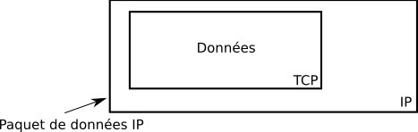
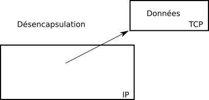
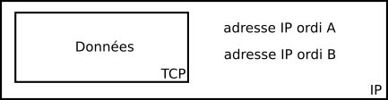
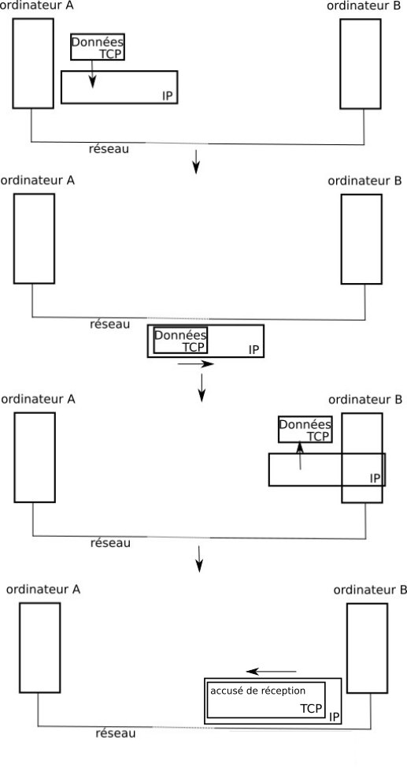

TCP/IP
Quand un ordinateur A "désire" envoyer des données à un ordinateur B, après quelques opérations qui ne seront pas abordées ici, l'ordinateur A "utilise" le protocole TCP pour mettre en forme les données à envoyer.
Ensuite le protocole IP prend le relai et utilise les données mises en forme par le protocole TCP afin de créer des paquets de données. Après quelques autres opérations qui ne seront non plus évoquées ici, les paquets de données pourront commencer leur voyage sur le réseau jusqu'à l'ordinateur B. Il est important de bien comprendre que le protocole IP "encapsule" les données issues du protocole TCP afin de constituer des paquets de données.

Une fois arrivées à destination (ordinateur B), les données sont "désencapsulées" : on récupère les données TCP contenues dans les paquets afin de pouvoir les utiliser.

Le protocole IP s'occupe uniquement de faire arriver à destination les paquets en utilisant l'adresse IP de l'ordinateur de destination. Les adresses IP de l'ordinateur de départ (ordinateur A) et de l'ordinateur destination (ordinateur B) sont ajoutées aux paquets de données.

Le protocole TCP permet de s'assurer qu'un paquet est bien arrivé à destination. En effet quand l'ordinateur B reçoit un paquet de données en provenance de l'ordinateur A, l'ordinateur B envoie un accusé de réception à l'ordinateur A (un peu dans le genre "OK, j'ai bien reçu le paquet"). Si l'ordinateur A ne reçoit pas cet accusé de réception en provenance de B, après un temps prédéfini, l'ordinateur A renverra le paquet de données vers l'ordinateur B.
Nous pouvons donc résumer le processus d'envoi d'un paquet de données comme suit :

Cours plus complet - utile pour les dernières questions
http://sebsauvage.net/comprendre/tcpip/
Le protocole TCP/IP
Qu’est-ce qu’une adresse IP ?
Qu’est-ce qu’un routeur ?
Qu’est-ce qu’un switch ?
Qu’est-ce qu’un protocole de communication sur internet ? Donner trois exemples de contraintes gérées par ces protocoles
Combien d’adresses IP sont disponibles en IPV4 ? Justifier
Combien d’adresses IP sont disponibles en IPV6 ? Justifier
Pourquoi passe-t-on progressivement de l’IPV4 à l’IPV6 depuis 1999 ?
En attendant le passage complet à l’IPV6, certains réseaux utilisent une adresse IP publique et des adresses IP privée. Quel en est l’intérêt ?
Le lycée possède un masque sous-réseau en 255.255.0.0. Au maximum, combien de machines connectées au réseau pourrait contenir le lycée ?
À quoi correspond la partie hôte et la partie réseau dans une adresse IP ?
A quoi sert le masque sous-réseau ?
Comparer l’IP privée (visible sur le bureau de chaque poste une fois une session ouverte) de deux postes voisins. Quelle est la partie commune ? A quoi correspond-elle ?
Comparer l’IP publique pour deux postes en vous rendant sur le sitehttp://monip.fr/
Sur votre smartphone, rendez-vous sur le sitehttp://monip.fr/ . Quelle est votre adresse IP ? Est-elle identique chez vous ? Justifier
Si vous êtes équipés d’une box à la maison, quel est son rôle ? On considérera que cette box sert également d’accès internet non sécurisé aux appareils mobiles extérieurs à votre maison
Que contient l’en-tête IP d’un paquet de données ?
Que contient l’en-tête TCP d’un paquet de données ?
Un paquet de données envoyé est-il nécessairement reçu par son destinataire ? Justifier. Que se passe-t-il alors ?
Exercices
- Convertir les nombres suivants en binaire : 2, 5, 10, 14, 25
http://www.courstechinfo.be/MathInfo/PoidsDesBits.html
- Lorsque l’on envoie une photo depuis un smartphone (70 Mo), en combien de paquets se fait cet envoi ?
🧠 Teste tes connaissances
Réponds aux questions puis clique sur « Vérifier » — la correction s'affiche aussitôt.
1. Lorsqu'un ordinateur A veut envoyer des données à un ordinateur B, quel protocole met d'abord en forme les données à envoyer ?
2. Quel est le rôle du protocole IP dans l'envoi des données ?
3. Comment le protocole TCP s'assure-t-il qu'un paquet est bien arrivé à destination ?
4. Que fait l'ordinateur A s'il ne reçoit pas l'accusé de réception après un temps prédéfini ?